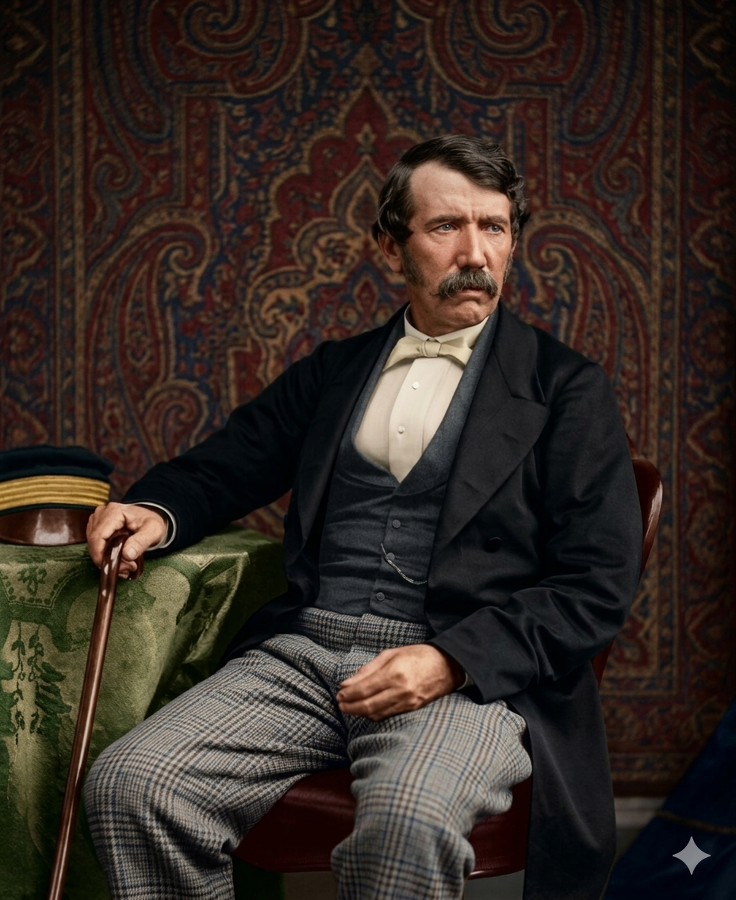

דייוויד ליווינגסטון
| שנות פעילות באפריקה: 1841 – 1873
המיסיונר שחצה את יבשת אפריקה ונלחם בסחר העבדים

לחץ על התמונה להגדלה
Dr. David Livingstone | Source: Wikimedia Commons | License: Public Domain
ניתוח אטימולוגי של השם המלא
שם פרטי: דייוויד (David)
השם "דייוויד" הוא הגרסה האנגלית לשם המקראי העברי דָּוִד.
מקור בלשני ומשמעות דתית: הפירוש המקובל ביותר לשם הוא "אהוב" (Beloved) או "ידיד". זהו שמו של המלך המפורסם ביותר בתנ"ך (דוד בן ישי).
סמליות פואטית בחייו: עבור ליווינגסטון, שגדל בבית סקוטי-פרוטסטנטי בעל אמונה דתית יוקדת (קלוויניסטית), השם התנ"כי היה בעל משמעות אדירה. כמו דוד המלך שהיה רועה צאן והפך למנהיג לוחם, כך ליווינגסטון התחיל כפועל טוויה עני ופשוט, והפך ל"רועה הרוחני" והגיאוגרפי של יבשת שלמה. הוא יצא לאפריקה במטרה להפיץ את אהבת האל (מיסיון), ונלחם כדוד מול גוליית נגד רשתות סוחרי העבדים הערבים והפורטוגלים העוצמתיות ששלטו באזור וזרעו חורבן.
שם משפחה: ליווינגסטון (Livingstone)
השם ליווינגסטון הוא שם משפחה סקוטי מובהק ממקור טופונימי (גיאוגרפי).
מקור בלשני והיסטורי: השם נגזר משמה של עיירה בסקוטלנד בשם Livingston (במחוז ווסט לות'יאן). העיירה עצמה קרויה על שמו של אדם סקסוני בשם Leving שחי במאה ה-12, בתוספת המילה האנגלית העתיקה tūn (עיירה, יישוב). כלומר, "היישוב של לוינג".
מורשת של קשיחות (Highlanders): משפחתו של דייוויד הגיעה במקור מאזור ההיילנדס (הרמות הגבוהות של סקוטלנד) לאי הצפוני אולבה (Ulva). סבו נאלץ לעזוב את החווה המשפחתית ולעבור לאזור התעשייתי של גלאזגו כדי למצוא עבודה עקב קשיים כלכליים. מעניין לציין שמשפחתו אייתה את שמה במקור Livingston (ללא האות "e" בסוף). דייוויד עצמו הוסיף את ה-"e" מאוחר יותר בחייו. השם והמורשת משדרים מוצא סקוטי קשוח של אנשי עבודה שרגילים לתנאי מחיה קיצוניים, תכונה אבולוציונית שהייתה קריטית להישרדותו של דייוויד לבדו במעמקי הג'ונגלים, הביצות והמדבריות של אפריקה במשך עשרות שנים.
ילדות ורקע מוקדם: עבודת פרך במפעל הכותנה
דייוויד ליווינגסטון נולד ב-19 במרץ 1813 בעיירה בלנטייר (Blantyre) הממוקמת על גדות נהר הקלייד בסקוטלנד. הוא נולד לעוני קיצוני בשיאה של המהפכה התעשייתית, השני מתוך שבעה ילדים.
עבודת ילדים אכזרית ותשוקה לידע
בגיל 10 בלבד, נשלח דייוויד לעבוד במפעל טוויית כותנה מקומי כדי לעזור בפרנסת המשפחה. שעות העבודה שלו היו מפרכות: מ-6:00 בבוקר ועד 20:00 בערב (14 שעות רצופות), שישה ימים בשבוע, בתוך רעש מחריש אוזניים של מכונות ואוויר סמיך מסיבי כותנה.למרות העייפות המוחצת שאחרי 14 שעות עבודה, התשוקה שלו לידע הייתה בלתי ניתנת לעצירה. במשכורת הראשונה שקיבל, הוא קנה ספר לימוד של דקדוק לטיני. הוא נהג להעמיד את הספר פתוח על מכונת הטוויה כדי להספיק לקרוא משפטים בודדים בזמן שהמכונה עבדה. לאחר המשמרת היומית, הוא הלך לבית ספר ערב בין השעות 20:00 ל-22:00 כדי ללמוד מתמטיקה, תיאולוגיה ומדעים.
הקונפליקט בין מדע לאמונה וההכשרה הרפואית
אביו של דייוויד, ניל, היה קלוויניסט נוקשה שדרש מילדיו לקרוא רק ספרי תיאולוגיה ואסר על קריאת ספרי מדע (אותם ראה ככפירה). דייוויד הוקסם מספרים על מדעי הטבע. הפריצה הפנימית שלו קרתה כשהבין שמדע ודת אינם אויבים – המדע הוא פשוט הדרך ללמוד את נפלאות היצירה של האלוהים.בגיל 23, לאחר שחסך מספיק כסף מעבודתו, נרשם ללימודי רפואה באוניברסיטת גלאזגו במקביל ללימודי כהונה. הוא האמין שכדי לעזור לאנשים, חובה לרפא את גופם ממחלות. בשנת 1840 הוסמך כרופא, וב-1841 הפליג לדרום אפריקה.
אידאולוגיה ומניעים: מרופא לחוקר יבשות
הסיפור של ליווינגסטון אינו של חוקר שהחליט מראש לגלות ארצות ולתקוע דגלים, אלא של אדם שמניעיו עברו אבולוציה דרמטית מול המציאות האפריקאית.
3. חזון "שלושת ה-C" והתפנית ההומניטרית-כלכלית
ככל שחדר למרכז אפריקה, מניעיו קיבלו תפנית נוקבת שהסתכמה בביטוי: Christianity, Commerce, Civilization (נצרות, מסחר, ותרבות).
- התפנית ההומניטרית (מלחמה בעבדות): הוא נחשף לזוועות סחר העבדים הערבי והפורטוגלי. הוא חזה בכפרים שרופים ושיירות של מאות אפריקאים כבולים גוועים ברעב. הוא הבין שאי אפשר להטיף על אהבת האל לאנשים הנשחטים יום-יום. חיסול העבדות, "הפצע המוגלתי הפתוח של העולם", הפך למטרתו העליונה.
- התפנית הכלכלית (מסחר כנשק): הוא הבין שהטפה דתית או איומים לא יפסיקו את העבדות, כי זו הייתה פרנסתם של הצ'יפים המקומיים. גישתו הייתה פרגמטית: חייבים לייצר חלופה כלכלית. מטרתו הייתה למצוא "כבישים מהירים של מים" אל לב היבשת כדי לפתוח מסחר חוקי (Commerce) בכותנה ושנהב. אם האפריקאים יתעשרו ממסחר חוקי, סחר העבדים יקרוס כי יהפוך ללא משתלם.
המסעות הגדולים באפריקה: פריצת היבשת הנסתרת
מסעותיו לא היו טיולי תגלית קצרים. הם הפכו למסעות הישרדות אפיים שארכו שנים ארוכות, בתנאים הקיצוניים ביותר. הוא סבל מהתקפי מלריה אלימים למעלה מ-30 פעמים במהלך חייו, אך סירב להיכנע למחלות.
1. מדבר קלהארי ואגם נגאמי (1849)
במסעו צפונה יחד עם ויליאם אוסוול, הוא חצה את מדבר קלהארי (Kalahari Desert) הצחיח תוך הישענות על מדריכים מהבושמנים. ב-1 באוגוסט 1849, הפך לאירופאי הראשון שהגיע לאגם נגאמי (Lake Ngami) בבוצוואנה. תגלית זו פרסמה אותו בבריטניה וזיכתה אותו במדליית זהב מטעם ה-RGS הבריטית.
2. חציית יבשת אפריקה ממערב למזרח (1852-1856)
ליווינגסטון הפך לאירופאי הראשון שתועד כמי שחצה את מרכז-דרום אפריקה לרוחבה. הוא יצא ללואנדה (Luanda) שבחוף האטלנטי. כשהוא חולה מאד, במקום להפליג חזרה לאנגליה, הוא סירב לנטוש את מלוויו האפריקאים והלך את כל הדרך חזרה מזרחה, דרך לב היבשת, עד קלימאנה (Quelimane) שבחוף האוקיינוס ההודי.
פסיכולוגיה של מנהיגות: ליווינגסטון נחשב למנהיג קשה מאוד מול אירופאים, אך היה גאון אנושי מול האפריקאים. בחצייה הגדולה לווה על ידי כמאה לוחמים משבט המקולולו (Makololo). הוא לא נשא כלי נשק למלחמה, למד את שפות הילידים, התייחס לצ'יפים בשוויון נדיר וריפא אותם. גישה זו פתחה לו דלתות באזורים שבהם משלחות חמושות נטבחו.
3. גילוי מפלי ויקטוריה (1855)
במהלך חציית היבשת, הובילו אותו לוחמי המקולולו אל תופעת טבע אדירה שהם כינו Mosi-oa-Tunya ("העשן שרועם"). ב-16 בנובמבר 1855, בסירת קאנו ממש על שפת התהום, הוא הביט מטה וראה מפלים עצומים הנופלים לנקיק ברוחב 1,700 מטרים. הוא העניק להם את השם מפלי ויקטוריה על שם מלכת בריטניה וכתב: "מראות יפים כל כך, שוודאי זכו למבטם של מלאכים במעופם".
4. משלחת הזמבזי, אוניית הפליז והטרגדיה המרה (1858-1864)
עם חזרתו לבריטניה כגיבור, קיבל מימון עתק כדי להוכיח שנהר הזמבזי יכול לשמש כנתיב מסחר נוח לספינות. נבנתה עבורו ספינת קיטור מיוחדת מפלדה ופליז בשם "מא-רוברט" (כינויה האפריקאי של אשתו מרי).
המשלחת הפכה לכישלון היסטורי. הספינה הייתה כבדה מדי, מנועה דרש עצים טרופיים (שלא בערו היטב), וגוף הפליז דלף בגלל ריאקציה כימית. בנוסף, ליווינגסטון גילה שהנהר חסום לחלוטין לניווט על ידי סדרת אשדים פראיים – אשדי קהורה באסה (Cahora Bassa). המתיחות בצוות הרקיעה שחקים והוא פיטר רבים מעמיתיו.
הטרגדיה הגדולה הכתה בו באפריל 1862. אשתו המסורה מרי ליווינגסטון הגיעה להצטרף אליו, חלתה במלריה חריפה ומתה בזרועותיו בשופאנגה. ליווינגסטון, שבור לב ומואשם בכישלון המשלחת, סירב לחזור והמשיך בחקר אגם מלאווי.
נתונים הידרולוגיים מהיומנים
נהר הזמבזי ומפלי ויקטוריה
תיעודו הסביר למערב את מבנה מערכת המים של דרום-מרכז אפריקה. הוא תיעד כיצד נהר הזמבזי (Zambezi) זורם לאיטו ברוחב של למעלה מקילומטר וחצי על פני רמת בזלת שטוחה, ולפתע נופל לתוך שבר גיאולוגי, תהום צרה ועמוקה מאד (108 מטרים). נפח המים מתנפץ בקרקעית ויוצר רסס סמיך הנישא למאות מטרים באוויר, שיוצר מיקרו-אקלים של יער גשם מקומי זעיר מסביב למפלים.
אגמי הבקע הסורי-אפריקאי ונהר שייר
הוא גילה את נהר השייר (Shire) ומיפה שניים מהאגמים הגדולים ביבשת (המרכיבים את בקע השבר הסורי-אפריקאי): אגם מלאווי (Nyasa) ואגם טנגנייקה (Tanganyika). עד סוף חייו הוא נותר באובססיה לגלות האם הנהרות שיוצאים מאגם טנגנייקה הם בעצם המקורות האבודים של נהר הנילוס.
תיעוד אקולוגי וזואולוגי: מזווית של נוסע והישרדות
בניגוד לחוקרי טבע (כמו הומבולדט) שחיפשו "מינים חדשים" לקטלוג מדעי, התיעוד הזואולוגי של ליווינגסטון היה מעשי, מנקודת מבט של הישרדות וכלכלה:
התקפת האריה (מבאבוצה 1844)
ליווינגסטון הותקף על ידי אריה פצוע שזינק עליו, תפס את כתפו וניער אותו "כמו שכלב טרייר מנער עכבר". מלווהו מבלווה הציל אותו ברגע האחרון. האריה ריסק את עצם הזרוע, וליווינגסטון סבל מנכות חלקית עד סוף חייו. מפרק הזרוע המרוסק שמעולם לא התאחה כראוי, היה הסימן שבעזרתו זיהו רופאים את גופתו בלונדון כ-30 שנה מאוחר יותר. למרות זאת, הוא המשיך לחקור את דפוסי הציד של האריות.
זבוב הצֶצֶה (Tsetse Fly)
זהו התיעוד הכלכלי החשוב ביותר שלו. הוא מיפה את התפוצה והסביר שעקיצת הזבוב אינה קטלנית מיידית לאדם, אך משמידה לחלוטין כל בהמת משא (סוסים, שוורים, כלבים). הוא הוכיח שזבוב זה מונע הקמת צירי מסחר יבשתיים במרכז אפריקה המבוססים על עגלות, מה שהגדיל את התלות של הסוחרים בעבדים אנושיים ששימשו כסבלים.
ציפור אוביל הדבש (Honeyguide)
הוא תיעד השתאות של סימביוזה שבה ציפור קטנה מצייצת ומובילה את המקומיים במסלול מדויק לכוורות דבורים נסתרות. בני האדם פותחים את הכוורת, לוקחים את הדבש, והציפור בתמורה זוכה לאכול את הדונג והזחלים שנותרו מאחור.
נחילי ארבה וטבח ניאנגווה (1871)
הוא תיעד נחילי ארבה שהשחירו את השמיים, אך שום תופעת טבע לא זעזעה אותו כרוע האנושי. בניאנגווה חזה בסוחרי עבדים ערבים שטבחו בכ-400 נשים וילדים אפריקאים שקפצו לנהר כדי להימלט. דיווחיו על הטבח הציתו זעם ציבורי בבריטניה שהוביל לסגירת שוק העבדים בזנזיבר.
החיפוש אחר הנילוס, "ד"ר ליווינגסטון אני מניח?", והמוות המצמרר
ב-1866 חזר לאפריקה בפעם האחרונה, אובססיבי לפתור את חידת מקורות נהר הנילוס. הוא נעלם במעמקי אפריקה המרכזית לשש שנים ארוכות, והעולם המערבי חשש שהוא נרצח על ידי סוחרי עבדים שתיעבו אותו.
המפגש עם סטנלי (1871) וסירוב החזרה
העיתון "ניו יורק הראלד" שלח את העיתונאי הנחוש, הנרי מורטון סטנלי (Henry Morton Stanley), למצוא אותו. ב-10 בנובמבר 1871, בעיירה אוּגִ'יגִ'י על גדות אגם טנגנייקה, מצא סטנלי את ליווינגסטון חולה ותשוש. הוא הסיר את כובעו ואמר את הציטוט האלמותי:
"Dr. Livingstone, I presume?" (ד"ר ליווינגסטון, אני מניח?).
למרות שהביא לו תרופות ומכתבים, ליווינגסטון סירב בתוקף לחזור לאנגליה. הוא רצה להמשיך לחקור את נהר הלואלבה, מאמין שזהו הנילוס (זו הייתה טעות, הוא חקר את מקורות נהר הקונגו).
הלב באפריקה, הגוף באנגליה (1873)
דייוויד ליווינגסטון מת ב-1 במאי 1873, כשהוא כורע על ברכיו בתנוחת תפילה באוהלו בכפר של הצ'יף צ'יטמבו. מחלת הדיזנטריה והמלריה הכריעו אותו סופית.
מעשה הנאמנות המדהים: צוות מלוויו הנאמנים, צ'ומה וסוסי (Chuma and Susi), ידעו כמה אהב את היבשת. הם קיבלו החלטה היסטורית: הם חתכו את חזהו, הוציאו את ליבו וקברו אותו עמוק באדמה תחת עץ מְווּלָה (Mvula) באפריקה.
לאחר מכן, הם מילאו את גופתו במלח, ייבשו אותה בשמש במשך 14 ימים, עטפו אותה בקליפת עץ ובד מפרשים. קבוצת המלווים נשאה את גופתו החנוטה ברגל, על כתפיהם, במשך תשעה חודשים ולמעלה מ-1,500 קילומטרים בתוך יערות שורצי סוחרי עבדים, עד שהגיעו לחוף הים.
ליווינגסטון זוהה בלונדון על פי עצם זרועו המרוסקת (מהאריה), וזכה להלוויה ממלכתית במנזר וסטמינסטר כגיבור לאומי שחיסל את דעת הקהל נגד העבדות.
מקורות וביבליוגרפיה (אימות מחקר אקדמי)
- "Missionary Travels and Researches in South Africa" (David Livingstone, 1857): ספר זיכרונותיו הראשון ורב המכר המתאר את גילוי מפלי ויקטוריה (1855), תקיפת האריה, הניתוח על זבוב הצצה ופילוסופיית "שלושת ה-C".
- "Livingstone" (Tim Jeal, 1973/2013): הביוגרפיה המקיפה ביותר המנתחת את כישלון ספינת ה"מא-רוברט", מות אשתו מרי, תיאור טבח ניאנגווה ומסעו השגוי אחר מקורות הנילוס.
- "How I Found Livingstone" (Henry Morton Stanley, 1872): ספרו של הנרי סטנלי, המתעד לפרטי פרטים את המפגש ההיסטורי בשנת 1871.
- ארכיון החברה הגיאוגרפית המלכותית (RGS): מסמכים היסטוריים המאשרים את קבלת המדליה על אגם נגאמי (1849) ומתעדים את מסע חניטת הגופה באפריקה.